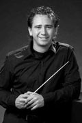

studentenharmonieorkest

 concerten
concerten
Auletes zal tijdens de tournee de volgende concerten verzorgen:
- dinsdagavond 13 juli 2010: Medemblik, Bonifaciuskerk
- donderdagavond 15 juli 2010: Hoorn, plein Roode Steen
- zaterdagmiddag 17 juli 2010: Amsterdam, binnenplaats AHM
orkest
Het harmonieorkest Auletes is de grootste ondervereniging van ESMG Quadrivium. Elk jaar staat er een gevarieerd en uitdagend repertoire op het programma, dat wordt uitgevoerd in diverse kleine en grote optredens. Het harmonieorkest bestaat uit zo'n 50 muzikanten, maar voor bepaalde projectconcerten wordt het orkest soms aangevuld tot wel 80 musicerende studenten.
dirigent
Sinds oktober 2008 is Jos Schroevers dirigent bij Auletes. Jos begon met het studeren van slagwerk aan het Sweelinck conservatorium te Amsterdam. Toen Jos in zijn 3e jaar conservatorium een baan kreeg bij de FKKL als paukenist, meldde hij zich aan voor de opleiding HaFa directie aan het Brabants conservatorium te Tilburg. Daar voltooide hij zowel zijn HaFa directie eerste fase als zijn opleiding slagwerk. Daarna maakte hij zijn opleiding compleet door de studie 2e fase HaFa directie (master) af te ronden bij Alex Schillings aan het Koninklijk Conservatorium te Den Haag.